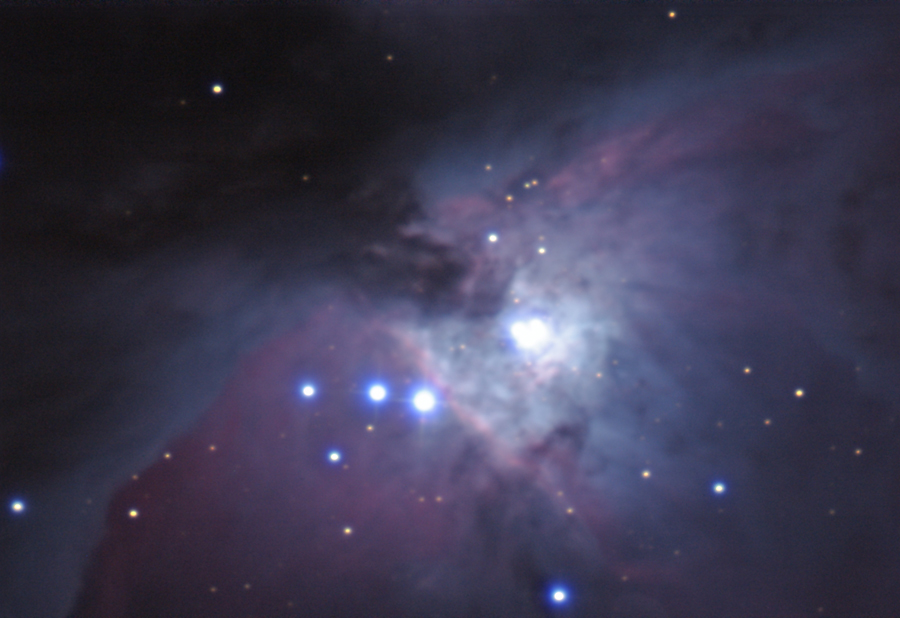

The Great Orion Nebula
You've probably seen Hubble photos of it. The Orion Nebula is one of, if not the, most spectacular objects in the sky, and no photograph does it justice. That didn't stop Mike Roman from stitching together 19 90-second exposures from his trusty Canon 300D camera to produce an image of most of the nebula. The size of the field of view is comparable to what you would see through the Fuertes eyepiece.
Like many other places throughout the Galaxy, the Orion Nebula is a stellar nursery. Gas clouds collapse to form stars or star clusters, and the largest, brightest, and hottest of these newborn stars produce huge amounts of ultraviolet radiation. This UV light hits surrounding gas and causes it to glow, producing a visible nebula. In the Orion Nebula, most of the radiation comes from a small group of stars in the center called the Trapezium. Unfortunately, the Trapezium is a bit overexposed in this image, but it's very easy to see through the telescope.
The red in this image is hydrogen, the most common element in the universe and the key ingredient of stars. The blue areas are not glowing gas at all, but rather ordinary starlight reflected from interstellar dust. The dark area in the upper left corner is more dust, this time blocking light from behind. You can see the dark dust if you visit Fuertes, but don't expect the colors -- the human eye is simply not capable of sensing color in something this faint.
